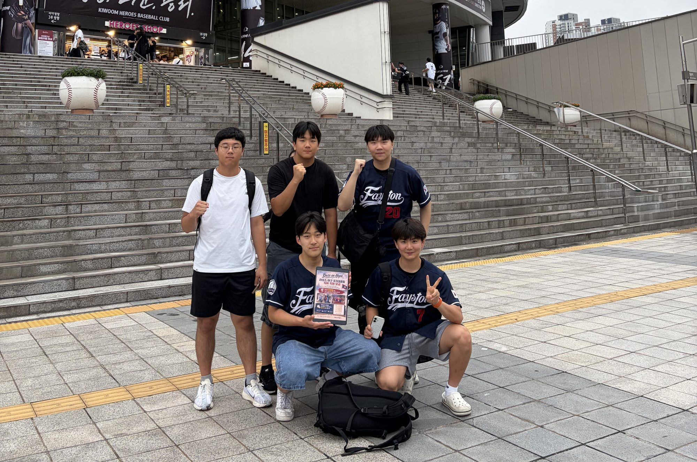

Field Fundraising · Ongoing
Nationwide Stadium Tour
Our Field Fundraising team visits baseball stadiums in Seoul and other cities across Korea, telling fans about the Laos National Baseball Team and inviting them to join the campaign.
- Lead
- Seungwon Oh, Head of Field Fundraising